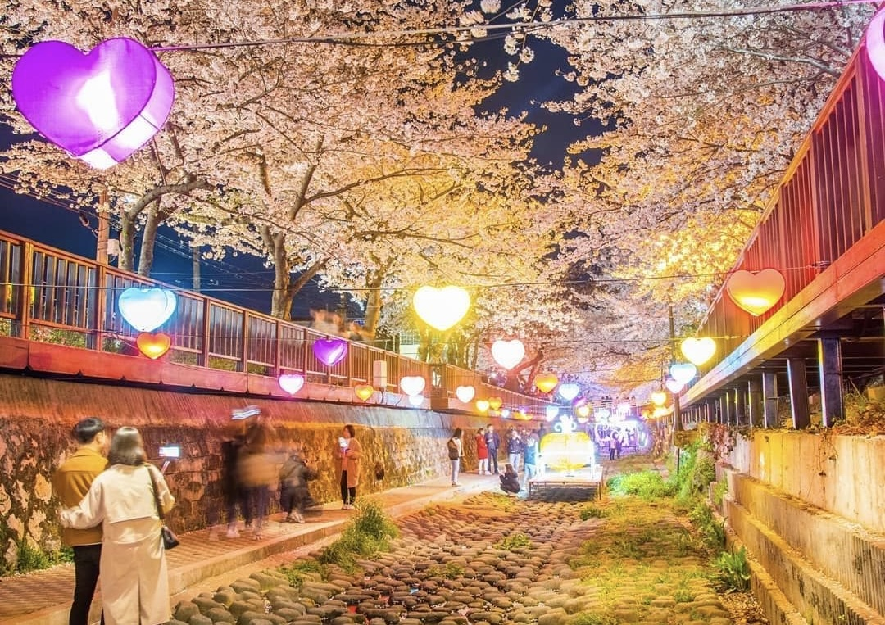

О Сеуле
Сеул — не просто город. Это место, где прошлое встречается с будущим, а традиции переплетаются с современными достижениями. Узнайте больше о культуре, истории и инновациях столицы Южной Кореи.

История
Сеул хранит богатую историю, уходящую корнями в древность. Здесь можно посетить дворцы, храмы и места, которые рассказывают о культурном наследии Кореи.

Культура
От традиционных ремёсел до современного искусства, Сеул — это центр корейской культуры. Город привлекает гостей своими фестивалями, культурными событиями и самобытными районами.

Современность
Великолепные небоскрёбы, высокие технологии и инновации — всё это делает Сеул одним из самых развитых мегаполисов мира, который удивляет и вдохновляет.